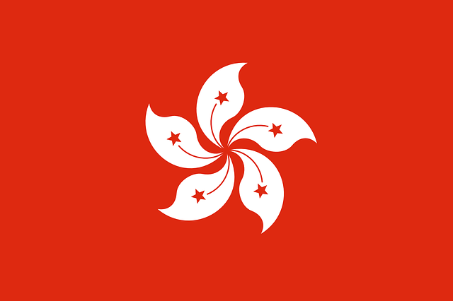

| 홍콩 | |
|  |
현재시간: 시차:1시간 빠름 수도:없음 공용어:표준 중국어, 영어, 광둥어 인구:약 760만 명 종교:50%(무종교),나머지(불교, 도교 등) 전압:220V, 50Hz(3구) 통화단위:홍콩달러($)
|
1월, 2월
평균 14~19도로 우리나라 가을 날씨와 비슷
아침저녁으로는 쌀쌀하고, 실내에는 난방을 거의 하지 않으므로 더 춥게 느껴짐
2월부터는 강수량은 적지만, 한 달에 열흘 정도는 비가 오는 기간이므로 우산 챙기기
3월, 4월
평균 17~25도로 서울의 봄 날씨와 비슷해 홍콩 여행 적기
한낮에는 더워 가벼운 옷차림이 좋지만, 서늘한 아침저녁에 대비하여 얇은 겉옷 챙기기
비가 잦은 기간이므로 우산 필수
5월, 6월
평균 25~30도로 서울의 여름과 비슷
한 달에 반 이상 비가 오는 우기로 덥고 습한 날씨가 계속됨
가벼운 여름 옷차림이 좋음
비, 천둥, 번개에 대비하여 휴대용 방수 재킷과 우산 준비
7월, 8월
평균 27~31도로 덥고 습한 한여름의 날씨
비도 많이 와서 실외에서는 다니기 힘들 정도
실내는 강력한 냉방으로 춥게 느껴질 수 있어, 얇은 긴 팔 준비
9월, 10월
한낮에는 30도를 웃돌아 우리나라 여름 날씨와 비슷
한 달에 반 정도는 비가 내려 습한 날씨가 계속됨
10월 중반을 넘어서면, 기온도 떨어지고 강수 일도 줄어 여행하기 좋은 시기
가벼운 여름옷과 냉방이 강한 실내나 다소 선선한 아침저녁을 대비한 얇은 겉옷 챙기기
11월, 12월
홍콩 여행의 최적기
16~24도로 온화하고 비 오는 날도 적음
12월은 기온이 15도까지 내려가지만, 우리나라 가을 날씨 정도의 가을 옷차림이 좋음
아침, 저녁을 대비해 가벼운 외투 챙기기
경찰, 화재, 구급차 999
MTR
총 10개의 노선이 동서남북을 가르며 홍콩 곳곳을 연결
MTR 홈페이지를 이용하면 소요 시간과 요금 계산 가능
간단정보
운영시간 : 06:00 - 00:50
려서이워 : 평일 08:00 - 10:00 / 17:30 - 19:00
요금 : 최소요금 HKD5
스타페리
홍콩섬과 구룡반도를 연결하는 스타페리
센트럴, 완차이행과 침사추이행이 있음
저렴한 금액에 바다 위에서 탁 트인 홍콩을 감상할 수 있음
센트럴행은 왼쪽, 완차이행은 오른쪽에 앉으면 최고의 전망
침사추이 - 센트럴
운영시간 : 06:30 - 23:30
요금 : 평일 1층 HKD2.2, 2층 HKD2.7 / 주말, 공휴일 1층 HKD3.1, 2층 HKD3.7
침사추이 - 완차이
운영시간 : 07:30 - 23:00
요금 : 평일 HKD2.7 / 주말, 공휴일 HKD3.7
일반페리
센트럴의 페리 터미널에서 출항
섬을 오가며 일요일과 공휴일은 가격이 1.5배 정도 오름
스타페리보다 운항 간격이 뜸하며 일반과 고속 퍼스트 페리가 있음
란타우 섬의 페리 터미널은 무이워에, 람마 섬의 페리 터미널은 소쿠완에 있음
센트럴 - 무이워(란타우 섬)
운영시간 : 00:30 - 23:30
일반요금 : HKD15.90 / 일,공휴일 HKD23.50
고속요금 : HKD31.30 / 일,공휴일 HKD44.90
센트럴 - 청차우 섬
운영시간 : 00:30 - 23:45
일반요금 : HKD13.60 / 일,공휴일 HKD20.20
고속요금 : HKD26.80 / 일,공휴일 HKD38.80
센트럴 - 소쿠완(람마 섬)
운영시간 : 07:20 - 23:30
일반요금 : HKD22 / 일,공휴일 HKD31
2층 버스
홍콩 전역으로 연결되는 2층 시내버스
요금은 탑승 역에서 종착역까지 남은 거리를 기준으로 계산됨
심야에 운영하는 나이트 버스 노선의 경우, 버스 번호 앞에 N이 붙음
2층에서는 위험하기 때문에 서있는 것 금지
현금 또는 옥스퍼드 카드로 지불
현금으로 내면 잔돈을 거슬러 주지 않음
간단정보
운영시간 : 05:30 - 24:00(노선에 따라 다름)
요금 : HKD5-22(거리, 버스에 따라 다름)
미니버스
초록 미니버스는 정해진 노선과 요금이 있음
빨간 미니버스는 종착역만 정해져 있을 뿐 고정 노선이 없어, 택시처럼 손을 들어 차를 세우며, 내릴 때도 미리 요청
입석은 허용되지 않아 자리가 있어야 탈 수 있음
빨간 미니버스는 정류장에 상관없이 아무데서나 타고 내릴 수 있으며 심야에도 운영
초록버스는 현금 지불 시 잔돈을 주지 않아 옥토퍼스 카드로 결제하면 편리
빨간버스는 현금만 받으며 거스름돈을 줌
간단정보
운영시간 : 06:00 - 24:00(노선에 따라 다름)
요금 : HKD3.4-10
트램
홍콩섬 서부부터 동부까지 총 6개 노선을 운행
출퇴근 시간은 매우 혼잡하며, 잘못 내렸더라도 워낙 촘촘한 간격으로 정류장이 있으므로 당황하지 말 것
뒤로 타고 앞으로 내리며, 하차 시 요금을 냄
6개 노선 외에 센트럴에서 빅토리아 피크까지 올라가는 관광용 피크트램이 있음
간단정보
운영시간 : 05:00 - 25:00
일반트램 요금 : HKD2.60
피크트램 요금 : 편도 HKD37 / 왕복 HKD52
택시
빨간색 택시는 란타우 섬 일부를 제외한 모든 지역에서 운행
초록색 택시는 신계지역(New Territories)에서 운행
터널을 통과하거나 캐리어를 트렁크에 실게 되면 추가 요금을 부과
대부분 택시는 현금으로 요금을 받음
요금정보(빨간색 택시 기준)
기본요금: 첫 2km HKD24
요금계산 : 200m 당 HKD1.7
캐리어 추가 : HKD6(트렁크에 실을 때)
터널통과 : 웨스턴 터널 HKD65/ 중부터널 HKD20/ 동부터널 HKD45